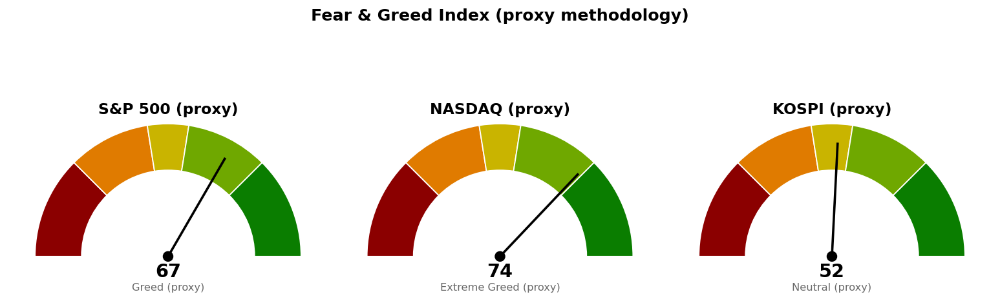

미국 지수·섹터·변동성지수·유가는 9월 22일 뉴욕 정규장 확정 종가입니다. 코스피는 9월 23일 12:01 장중값이며, 코스피 지수의 9월 22일 일봉이 시세 제공처에 없습니다 — 같은 날 한국 개별 종목에는 일봉이 있고 지수 시간별 자료에도 09:00~14:00 체결이 남아 있으므로(마지막 체결 7,037) 지수 일봉만 빠진 것입니다. 등록 가격 채점과 국면 판정은 이 빠진 봉 없이 돌았고, 지수의 마지막 확정 종가는 9월 21일 7,008입니다. 니케이 225는 9월 18일 종가가 최신입니다.
| 직전에 건 조건 | 판정 | 근거 |
|---|---|---|
| 나스닥 기준선 26,951 (종가 상회 유지) | 충족 | 9/22 종가 27,244로 293포인트(하루 평균 변동폭 327의 0.89배) 위에서 확정됐습니다 |
| 나스닥 도착지 27,400 (고가 도달) | 미충족 | 9/22 고가 27,289로 111포인트(0.34배) 못 미쳤습니다 |
| 나스닥 사다리 1차 26,680 (장중 터치) | 미충족 · 집행 없음 | 저가 27,161로 481포인트 위입니다 |
| S&P 500 기준선 7,794 (종가 상회) | 미충족 | 9/22 종가 7,765 · 고가 7,782로 29포인트(0.44배) 아래에서 마쳤습니다 |
| S&P 500 사다리 1차 7,653 (장중 터치) | 미충족 · 집행 없음 | 저가 7,756으로 103포인트 위입니다 |
| 코스피 기준선 7,054 (종가 상회) | 미충족 · 진행 중 | 9/22 지수 일봉이 없고, 9/23은 7,154로 열려 7,023까지 되밀린 채 장중입니다 |
| 코스피 도착지 7,199 (고가 도달) | 미충족 | 9/22 시간별 고가 7,171 · 9/23 고가 7,154로 28포인트(0.12배) 못 미쳤습니다 |
| 코스피가 6,830을 종가로 지킴 | 충족 | 9/23 저가 7,015로 185포인트 위에서 버텼습니다 |
| 코스피 사다리 1차 6,702 (장중 터치) | 미충족 · 집행 없음 | 저가 7,015로 313포인트 위입니다 |
| 30년 금리 5.286% 아래 (종가) | 미충족 | 9/21 5.296%에서 9/22 5.303%로 0.007%포인트 올랐습니다 |
직전 브리핑이 유보했던 나스닥 판정은 충족으로 확정됐습니다. 직전은 9월 22일 봉이 아직 거래 중이라 채점 결과를 그대로 쓰지 않고 진행 중으로 적었는데, 마감 결과 26,951 위에서 확정됐습니다. 직전이 "다음 세션에 볼 것"으로 적은 S&P 500 7,794는 아래에서 마쳤고, 그 경우 나스닥만 박스 위에 남아 지수 간 신호가 갈리는 상태가 하루 더 이어진다고 직전이 적어 둔 그대로입니다.
"못 지키면 어디까지"는 이번 구간에서도 시험받지 않았습니다. 세 지수 모두 다음 지지(7,653 · 26,680 · 6,830) 아래로 내려간 적이 없고, 가장 가까이 간 값은 코스피 9/23 저가 7,015로 185포인트 위에서 멈췄습니다.
세 계획 모두 살아 있고, 기준선·도착지·다음 지지·사다리·취소선을 한 자리도 옮기지 않았습니다. 나스닥은 기준선을 넘긴 것이 아니라 지키고 있는 상태이므로 그 선을 그대로 두고 도착지 27,400을 다음 채점 대상으로 둡니다. 직전 판단에서 방향을 반대로 본 대목은 없습니다.
9월 22일은 7,771로 열려 7,782까지 갔다가 7,765로 마쳤고, 고가와 기준선의 거리가 12포인트라 다음 세션에 한 번에 닿는 거리입니다. 90일 박스는 7,282~7,794이고 박스 안쪽은 지지 테스트마다 매도 거래량이 늘면서 저점은 절상돼 매집·분산 어느 쪽 우위도 판정되지 않았습니다. 직전과 같습니다.
9월 22일은 시가 27,161이 그대로 저가였고 고가 27,289에서 27,244로 마쳤습니다. 박스 상단 위에서 실제 반응이 있었던 가격은 27,000 라운드 하나뿐이고 도착지 27,400의 근거는 라운드 피겨 단독입니다. 그래서 이 지수는 27,400 위 경로를 적지 않고 기준선 26,951과 두 갈래만 냅니다. 일봉 되돌림선은 이번에도 산출되지 않았습니다 — 직전 상승 구간의 종점이 6월 1일이라 지금 구간에 맞지 않습니다.
9월 22일과 23일 두 세션 연속으로 기준선 7,054 위에서 열렸다가 그 아래로 되밀렸습니다(22일 시가 7,162 → 마지막 체결 7,037, 23일 시가 7,154 → 12:01 현재 7,023). 20일선 6,830이 50일선 6,884보다 54포인트 낮아 짧은 이평이 긴 이평 위로 아직 올라서지 못했고, 6,830과 6,673 사이 157포인트(0.70배)에는 받칠 가격이 없습니다. 코스피의 다음 세션 시가는 오늘 밤 뉴욕 세션이 정합니다 — 나스닥은 기준선을 지켰고 S&P 500은 놓쳐 두 미국 지수가 갈려 있으므로, 코스피 단독 신호로 결론을 앞당기지 마십시오.
세 지수 회차를 전부 집행하면 계좌의 16%(약 22,320,000원 · S&P 500 6% · 나스닥 6% · 코스피 4%)가 지수 노출로 들어갑니다. 세 지수가 모두 취소선까지 밀려 정리하는 최악의 경우 계좌 대비 -0.24%(약 -331,000원)입니다. 갭으로 취소선을 건너뛰고 열리면 실제 손실은 이보다 커집니다. 지수 포인트로만 적었으므로 어떤 종목·ETF로 집행할지는 사용자가 정합니다.
| 지수 | 종가/현재 | 등락 | 고가 | 저가 |
|---|---|---|---|---|
| S&P 500 (9/22 종가) | 7,765 | -0.0008% | 7,782 | 7,756 |
| 나스닥 종합 (9/22 종가) | 27,244 | +0.45% | 27,289 | 27,161 |
| 코스피 (9/23 장중) | 7,023 | +0.19% | 7,154 | 7,015 |
| 니케이 225 (9/18 종가) | 65,019 | +1.38% | 65,437 | 64,404 |
S&P 500은 전일 종가에서 0.06포인트만 움직여 같은 값으로 마쳤고, 나스닥은 시가가 그대로 저가였습니다. 코스피는 시가가 오늘 고가이며 현재가가 시가보다 131포인트 낮습니다.
20일 초과수익이 플러스인 업종이 기술 하나로 줄었습니다. 직전에 +0.63이던 커뮤니케이션이 -0.39로 내려왔고, 기술은 +6.95에서 +7.54로 더 벌렸습니다. 하루치 상위는 소재 +1.65% · 필수소비재 +0.97% · 기술 +0.72%인데 소재와 필수소비재는 20일 기준 하위권이므로 주도 교체로 읽지 않습니다.
한국 섹터는 테마형 ETF 기준이라 미국 업종 ETF와 성격이 다르고, 두 블록의 막대 길이는 서로 견주지 않습니다. 플러스 업종이 넷에서 둘로 줄었고 순서도 바뀌어 반도체가 AI전력기기를 앞섰습니다. 계좌의 반도체 7.06% · AI전력 14.61%가 이 두 축에 걸려 있습니다.
| 항목 | 값 | 직전 대비 |
|---|---|---|
| 미국 경기선행지수 (2026년 8월) | 100.96 | 7월 100.89 대비 +0.06 · 직전 브리핑과 같은 값 |
| 한국 경기선행지수 (2026년 8월) | 102.87 | 7월 102.81 대비 +0.06 · 직전 브리핑과 같은 값 |
| 미 10년 명목금리 | 4.96% (9/21 확정) | 9/18 5.01% 대비 -0.05%포인트 · 9/22 지수 시세는 4.968% |
| 미 10년 기대물가 | 2.33% (9/22) | 9/21 2.34% 대비 -0.01%포인트 |
| 미 10년 실질금리 | 2.62% (9/21) | 9/18 2.68% 대비 -0.06%포인트 |
| 유가 (WTI) | 확정치 107.02달러 (9/15) · 최신 89.72달러 (9/22 선물 종가) | 선물 직전 종가 95.78달러 대비 -6.33% |
| 달러지수 (광의) | 119.51 (9/18) | 9/17 119.35 대비 +0.16 · 직전 브리핑과 같은 값 |
| 변동성지수 (VIX) | 14.21 (9/22 종가) | 9/21 14.87 대비 -4.44% · 백분위 19.4 |
경기선행지수는 장기 평균을 100으로 놓고 경기 방향을 몇 달 앞서 보여주는 지표입니다(OECD 작성, 진폭조정 계열). 미국·한국 모두 8월치가 최신이고 새 발표가 없었으므로 직전 브리핑과 값도 해석도 같습니다.
9월 18일에서 21일 사이 10년 명목금리가 0.05%포인트 내리는 동안 기대물가는 2.33%에서 2.34%로 0.01%포인트 올랐고 실질금리가 0.06%포인트 내렸으므로, 명목이 내린 원인은 실질금리 쪽입니다. 같은 구간의 달러지수는 9월 18일 이후 갱신이 없어 금·달러의 실제 움직임과 맞는지는 이번에도 확인할 자료가 없습니다. 10년물과 달리 30년물은 9월 22일에 5.296%에서 5.303%로 올라 신규 편입 재개 조건과 반대 방향으로 움직였습니다.
1. 나스닥 장중 사상 최고, 기술주 반등 (Reuters, 9월 22일 13:54 UTC) 기술 20일 초과수익이 +6.95에서 +7.54로 벌어지는 동안 S&P 500이 0.06포인트 움직여 마친 것과 같은 사실입니다. 나스닥 기준선 26,951을 지키는 힘이 한 업종에 실려 있다는 뜻이며, 커뮤니케이션까지 마이너스로 내려온 이번 구간에는 더 그렇습니다.
2. 연준 콜린스, 금리 인상에 찬성했고 물가 위험이 높다고 경고 (Reuters, 9월 22일 15:01 UTC) 신규 종목 편입 재개에 남은 단 하나의 조건이 30년 금리 종가 5.286%인데, 같은 날 30년은 5.303%로 올라 마쳤습니다. 10년은 내리고 30년은 오른 이날의 움직임과 이 발언이 같은 방향이므로, 이 조건은 단기간에 풀릴 것으로 보고 기다리지 않습니다.
3. 나스닥의 기록 경신이 보내는 신호는 눌림을 기다리지 말라는 것 (MarketWatch, 9월 22일 21:44 UTC) 이 브리핑의 매수 계획은 눌림에서만 집행되는 사다리이므로 기사와 정면으로 어긋납니다. 기준선과 사다리를 옮기는 근거는 가격뿐이므로 기사를 근거로 바꾸지 않습니다. 나스닥 사다리 1차 26,680에 닿지 않으면 이번 구간에는 사지 않습니다.
이번 수집에서는 278건을 받아 10건을 추렸습니다.

세 점수 모두 공식 CNN Fear & Greed 지수가 아니라 모멘텀·상대강도·변동성·안전자산 선호 네 항목으로 계산한 대용 지표입니다. 변동성 항목은 그 지수의 변동성이 자기 과거 3년 분포에서 차지하는 자리로 산출하며, 미국은 변동성지수 14.2가 백분위 19.4(표본 754일), 코스피는 내재변동성 지수가 없어 20일 실현변동성 연율화 31.4%가 백분위 71.0(표본 707일)입니다.
세 지수 모두 0.5~0.7포인트씩 내렸고 구간은 그대로입니다. 나스닥 네 항목은 모멘텀 72.7 · 상대강도 65.8 · 변동성 80.6 · 안전자산 선호 75.9이고, S&P 500은 66.6 · 59.3 · 80.6 · 58.8로 변동성 항목이 두 지수에 같은 값으로 들어갑니다. 코스피는 모멘텀 49.9 · 상대강도 55.9 · 변동성 29.0 · 안전자산 선호 72.9로 변동성 항목이 가장 낮습니다.
| 날짜 (한국시간) | 이벤트 | 확인할 것 |
|---|---|---|
| 9월 23일 15:30 | 코스피 마감 | 7,054 위에서 마치는지 · 6,830을 지키는지 |
| 9월 24일 05:00 | 뉴욕 정규장 마감 (미국 9/23) | S&P 500이 7,794 위에서 마치는지 · 나스닥이 26,951 위를 지키는지 · 30년 금리가 5.286% 아래로 내려오는지 |
| 9월 24일 | 미국 주간 신규 실업수당 청구 | |
| 9월 30일 | PCE 물가지수 · GDP | 연준이 보는 물가 지표 |
| 10월 1일 · 8일 · 15일 · 22일 · 29일 | 주간 신규 실업수당 청구 | |
| 10월 2일 | 고용보고서 (비농업 고용 · 실업률) | |
| 10월 14일 | CPI | 10월 FOMC 직전 마지막 물가 지표 |
| 10월 28일 | FOMC (미국 10/27~28) | 30년 금리 조건을 움직일 첫 예정 발표 |
| 10월 29일 | PCE 물가지수 · GDP | |
| 11월 6일 | 고용보고서 | |
| 11월 10일 | CPI |
보유 종목의 실적일은 이번 브리핑에서 따로 조회하지 않았으므로 각 종목 리포트에 등록된 날짜를 따릅니다.
장부에 기록된 보유는 16종목이고 매도 기록은 없습니다. 계좌 평가액 139,498,400원 기준 투입 37.62% · 손절까지 남은 손실 합계 1.71%(한도 6%) · 테마 최대 AI전력 14.61%(한도 35%) · 한 종목 최대 TIGER 미국배당다우존스 (458730.KS) 10.47%(한도 13%)로 세 한도 모두 위반이 없습니다(환율 1,351원). 미국 보유 종목 다수는 9월 22일 종가가 제공되지 않아 같은 날 시간별 마지막 체결가로 채워 평가했으므로, 아래 평가손익과 비중은 확정 종가와 다를 수 있습니다. 시장 국면은 코스피가 200일선 대비 +12.63%, S&P 500이 +7.96%로 두 시장 모두 신규 진입이 막히지 않은 상태입니다.
1. 신규 종목 편입 재개는 30년 금리 하나로 판정합니다. 오늘 뉴욕 마감 종가가 5.286% 아래면 그날부터 재개하고, 위에서 마치면 지수가 더 올라도 재개하지 않습니다. 9월 22일은 5.303%로 조건에서 더 멀어졌습니다. 2. 매수 쪽 — 지수 사다리는 대기이고 이번 세션에 집행할 회차는 없습니다. 1차 회차는 S&P 500 7,653 · 나스닥 26,680 · 코스피 6,702입니다. 장중 터치로 판정하므로 눌림이 오면 그때 집행하고, 취소선 7,517 · 25,967 · 6,600을 일봉 종가로 잃으면 남은 회차를 멈춥니다. 3. USA Rare Earth (USAR) 30주는 9월 22일에 집행 손절 16.43달러를 장중 저가 16.24달러로 찍었습니다. 전량 손절이며 평단 17.88달러 대비 -8.1%(-43.64달러)입니다. 매도했으면 수량·단가·날짜를 텔레그램으로 보내 주십시오 — 보내지 않으면 다음 훑기도 30주를 들고 있는 것으로 채점합니다. 4. AMD 2주는 9월 21일 종가 615.52달러로 확인선 518.67달러와 1차 목표 600.00달러를 모두 지났습니다. 평단 576.08달러 대비 +8.3%(+95.85달러)이고 현재가는 624.00달러입니다. 기존 계획으로는 청산 구간이므로 그 위를 들고 갈지는 오늘 미국 배치의 새 리포트로 다시 잡습니다. 5. Bloom Energy (BE) 1주는 신규 매수 보류입니다(보유분 유지, 새 리포트 대기). 9월 18일 종가 265.63달러로 관망 종료 기준 270.25달러를 잃어 이 리포트의 매수 계획이 끝났고, 파는 선이 아니므로 1주는 그대로 둡니다. 6. Fluence Energy (FLNC) 270주는 9월 23일 새 리포트로 가격이 다시 등록돼 직전 브리핑이 적었던 계획 불성립 문제가 해소됐습니다. 회복선 9.50달러 · 집행 손절 8.37달러 · 목표 11.89달러이고 현재가 7.26달러는 회복선 아래이므로 이번 세션에 할 일은 없습니다. 7. 한화손해보험 (000370.KS) · 현대해상 (001450.KS) · TQQQ 세 종목은 등록된 기준 가격이 없어 어떤 조건으로도 채점되지 않습니다. 셋 다 오늘 배치의 심층 분석 대상에 올라 있으므로 리포트가 나오면 좌표가 등록됩니다. 8. 목록 대조에서 어긋난 곳은 없습니다. 직전 브리핑이 정리 대상으로 적었던 GOOGL·INTC·SOXX·TLT 건은 해소됐고, 지금은 보유 16종목·관심 1종목(GOOGL)·기준 가격만 남은 종목 0개입니다.
다음 세션에 볼 것 하나 — 한국시간 9월 24일 05:00 뉴욕 마감에서 S&P 500이 7,794 위인지입니다. 위에서 마치면 두 미국 지수가 같은 방향으로 확정되고 코스피 기준선 7,054도 다음 세션에 다시 시험받으며, 아래에서 마치면 나스닥 혼자 박스 위에 남은 상태가 사흘째 이어집니다.
ATR(하루 평균 변동폭): 최근 14일 동안 하루에 오르내린 폭의 평균. · EMA(지수이동평균): 최근 가격에 더 무게를 준 평균 가격선. · RSI(상대강도지수): 최근 14일 오른 폭과 내린 폭의 비율을 0~100으로 나타낸 값. · 겹침 점수: 같은 가격대에 지지·저항 근거가 몇 겹으로 모였는지 나타낸 값이며 클수록 두껍습니다. · 20일 초과수익: 최근 20거래일 수익률에서 기준 지수 수익률을 뺀 값. · VIX(변동성지수): S&P 500 옵션에 반영된 향후 30일 예상 변동폭.
이 문서는 참고 정보이며 투자자문이 아닙니다. 모든 수치는 위에 적은 기준 시각의 시장 자료에서 가져온 것이고, 투자 판단과 그 결과에 대한 책임은 투자자 본인에게 있습니다.